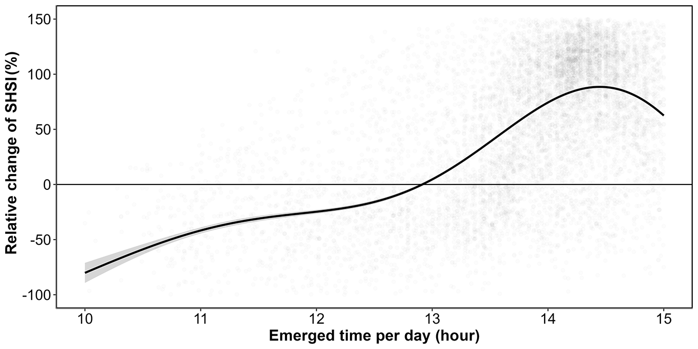

5 The impact of Heatwave on Seagrasses using hyperspectral and multispectral remote sensing
Abstract
Seagrasses play a vital role in coastal ecosystems, providing habitat, stabilizing sediments, and contributing to carbon sequestration. However, climate change has increased the frequency and intensity of heatwaves, posing a significant threat to seagrass health. This study investigates the effects of marine and atmospheric heatwaves on the spectral reflectance of the intertidal seagrass Zostera noltei. Laboratory experiments were conducted under controlled heatwave conditions, where hyperspectral reflectance measurements were taken to assess the impacts over time. Heatwaves caused a substantial decline in seagrass reflectance, particularly in the green and near-infrared regions, corresponding to the browning of green leaves. Key vegetation indices, including the Normalized Difference Vegetation Index (NDVI) and Green Leaf Index (GLI), showed pronounced reductions under heatwave stress, with NDVI values decreasing by up to 34% and GLI by 57%. A novel metric, the Seagrass Heat Shock Index (SHSI), was developed to quantify the transition of seagrass leaves from green to brown, demonstrating a strong ability to capture the effects of heatwave exposure on seagrass coloration. Multispectral satellite observations corroborated the laboratory results, revealing widespread browning of seagrass leaves during marine and atmospheric heatwave events in South Brittany, France. Notably, darkened seagrass patches were observed in intertidal areas exposed to temperatures exceeding 32°C for over 13.5 hours per day. These findings highlight the potential of spectral reflectance as a tool for detecting early signs of heatwave-induced stress in seagrasses, offering a valuable method for remote sensing-based habitat assessment. The present study underscores the potential of remote sensing to capture rapid environmental changes in intertidal zones, enabling for continuous monitoring of seagrass meadows under the current and future climate regimes.
5.1 Introduction
Seagrasses play a crucial role in coastal ecosystems by providing habitats and feeding grounds for various marine species, supporting marine biodiversity, and contributing to primary production and carbon sequestration (Sousa et al., 2019; Unsworth et al., 2022). Seagrasses are essential for several ecological functions, such as sediment stabilization (Infantes et al., 2022) or eutrophication mitigation by consuming nutrients (Gladstone-Gallagher et al., 2018). This justifies their use as indicators of environmental changes due to their sensitivity to water quality variations (Zoffoli et al., 2021). The interactions between seagrass meadows and their associated herbivores further enhance the delivery of ecosystem services, including coastal protection, fisheries support and provision of habitat and resources for birds (Gardner and Finlayson, 2018; Jankowska et al., 2019; Unsworth and Butterworth, 2021; Zoffoli et al., 2023). Understanding and preserving seagrass is vital for maintaining the biodiversity and productivity of coastal regions (Ramesh and Mohanraju, 2020; Scott et al., 2018).
Despite their crucial role in marine ecosystems, seagrasses face numerous threats that compromise their health and functionality. Intertidal seagrasses are subjected to a combination of aquatic and aerial conditions linked with tidal cycles, and face disturbance from terrestrial and aquatic stressors. Coastal development and human activities are primary threats, reducing the available habitat for seagrasses and increasing water turbidity, limiting light penetration, and photosynthesis (Waycott et al., 2009). Seagrasses are also threatened by runoff from agricultural fields and urban areas leading to nutrient enrichment. Eutrophication promotes the growth of seaweed in coastal waters, causing macroalgal blooms that compete with seagrasses for light and nutrients (Brun et al., 2003; Oiry et al., 2024; Thomsen et al., 2023). Pollution from industrial and agricultural sources introduces harmful chemicals and heavy metals into coastal waters, posing toxic risks to seagrass health (Bastos et al., 2023; Green et al., 2021; Zahoor and Mushtaq, 2023). Among manifold anthropogenic stressors, heatwaves (HWs), exacerbated by climate change, pose a severe threat to seagrasses, with catastrophic dieback events observed worldwide (Carlson et al., 2018; Marbà and Duarte, 2010; Moore and Jarvis, 2008; Strydom et al., 2020; Thomson et al., 2015).
Marine Heatwaves (MHWs) are defined by Hobday et al. (2016) as prolonged discrete anomalously warm water events, while Atmospheric Heatwaves (AHW) are defined by Perkins and Alexander (2013) as periods of at least three consecutive days with temperatures exceeding the 90th percentile of a time series covering at least 30 years. Subtidal seagrass meadows are exposed to MHWs, whereas at the interface between land and ocean, intertidal seagrasses are exposed to both MHWs and AHWs. HWs profoundly impact seagrass physiology, with effects varying between species and geographic location. Widespread seagrass species such as Zostera marina exhibits high susceptibility to elevated sea surface temperatures during winter and spring, leading to advanced flowering, high mortality rates, and reduced biomass (Sawall et al., 2021). Similarly, Cymodocea nodosa shows increased photosynthetic activity during HWs but suffers negative effects on photosynthetic performance and leaf biomass during recovery (Deguette et al., 2022). Additionally, different populations of Zostera marina along the European thermal gradient exhibit varied photophysiological responses during the recovery phase of HWs, indicating differential adaptation capabilities among populations (Winters et al., 2011). High-latitude populations exhibited prolonged declines in photophysiological performance even after temperatures returned to control levels, whereas the low-latitude Adriatic population showed full recovery (Winters et al., 2011). These events intensify other stressors, such as overgrazing and seed burial, compromising recruitment (Guerrero-Meseguer et al., 2020). Although extensive research exists on marine heatwaves’ effects on subtidal seagrasses (Arias-Ortiz et al., 2018; Deguette et al., 2022; Strydom et al., 2020), less attention has been given to intertidal habitats and even less to the effect of atmospheric extreme events on intertidal seagrass. Nonetheless, recent research showed that the low tide exposure of Zostera noltei to a simulated four-day atmospheric HW caused significant decreases in its photosynthetic efficiency, resulting in leaf necrosis and decay (Román et al., 2023).
The increased occurrence of extreme climate events calls for the implementation of monitoring strategies able to provide detailed and spatially explicit assessments of HWs effects on seagrass meadows. In such context, remote sensing, whose ability to map seagrass distribution over a variety of spatio-temporal scales has been demonstrated (Davies et al., 2024a, 2024b; Oiry et al., 2024; Román et al., 2021), proved useful to study the changes in seagrass coverage caused by extreme HW event (Strydom et al., 2020). The pigment composition of plants, such as chlorophylls, carotenoids, and anthocyanins, significantly influences their spectral signature in the visible range due to their specific light absorption properties (Davies et al., 2023; Douay et al., 2022; Olmedo-Masat et al., 2020; Ustin and Jacquemoud, 2020). During the senescence phase of seagrass’ life-cycle, the degradation of chlorophyll and the unmasking of accessory pigments result in noticeable changes in leaf coloration and reflectance, including increased reflectance in the red and green wavelengths and shifts in the red-edge position (Boyer et al., 1988; Mariën et al., 2019; Peñuelas et al., 2004). Leaf browning, often observed after stress events, produces reflectance changes similar to those caused by senescence, enabling the detection of vegetation stress through remote sensing (Boyer et al., 1988; Peñuelas et al., 2004). Spectral indices such as the Brown Pigment Index (BPI) and the Photochemical Reflectance Index (PRI) have been developed to assess changes in terrestrial plant physiological status, including oxidative and drought stress (Garbulsky et al., 2011; Skendzic, 2023). While these effects are well-documented in terrestrial plants, the spectral reflectance changes associated with senescence and stress events such as MHWs or AHWs remain poorly studied on intertidal seagrasses.
This study aims to experimentally test the hypothesis that HWs alter the reflectance of the intertidal seagrass Zostera noltei. Controlled experiments in intertidal chambers were conducted to evaluate the direct impact of heat stress on seagrass reflectance. The findings will then be applied to satellite remote sensing images, providing critical insights into the spatial extent and temporal dynamics of HW effects on seagrass meadows. By linking experimental results with large-scale observations of seagrass leaves’ browning, the study aims to underscore the potential of remote sensing to enhance our understanding of seagrass responses to extreme thermal events across diverse settings and timescales.
5.2 Materials & Methods
5.2.1 Laboratory Experiment
5.2.1.1 Sampling and acclimation of seagrasses
Seagrass samples were taken in summer 2024, at low tide, from a Zostera noltei (dwarf eelgrass) meadow located in Bourgneuf Bay, France (46°57’32.0”N, 2°10’37.0”W). A metal coring devices was used to sample seagrass from an area of 30x15x5 cm (length x width x depth, respectively), maintaining the sediment structure and avoiding damage to seagrass rhizomes and leaves (Figure 5.1 A). These coring device enabled the collection of sediment samples at a consistent depth, minimizing variability between samples. A total of six samples were collected. Samples including seagrass, sediment, meiofauna, and macrofauna, were placed in plastic trays. Keeping the entire biota allowed for natural interactions between components and reduced stress on the seagrass. Seawater was added to each tray to avoid hydric stress caused by insufficient moisture during transportation (1h drive from the laboratory). Simultaneously, seawater was sampled 4km away from the seagrass sampling site and transported to the lab, where it was filtered using a 0.22 µm nitrocellulose filter to remove suspended particulate matter. The filtered seawater was used in the acclimation tank and the intertidal chambers. The seagrasses were acclimated for one week with a water temperature of 17°C, matching the in situ temperature during sampling, and a photosynthetically active radiation (PAR) of 150 µmol.s-1.m-2.
5.2.1.2 Experimental design
A tidal cycle (i.e. regularly alternating 6h of low-tide and 6h of high-tide) was simulated in the laboratory using an intertidal chamber system from ElectricBlue® (Figure 5.1 B ; Electric Blue (2023)). The experimental setup allowed only two tidal states: high tide or low tide, with no intermediate stages. The transition between these states took about 15 minutes to complete after initiation. During the phase of high tide, a volume of 30 L of filtered seawater was pumped and circulated through the chamber (Figure 5.1 B, C). During low tide, the seagrass sample was emerged. The acclimated seagrasses were split into two subsets and placed in two independent chambers used in parallel, with one chamber used for control and the other for the experimental treatment. The intertidal chambers were equipped with LED lights that emitted a low mount of red and infrared radiation. To achieve a Photosynthetically Active Radiation (PAR) intensity of up to 400 μmol·m⁻²·s⁻¹, a filament bulb was added inside the chambers. During the diurnal phase of the experiment, the PAR was kept constant in both intertidal chambers. To follow the circadian cycle, these lights (both LED and filament bulb) were turned on and off each day, at the time of sunrise and sunset, respectively.
Air temperature and water temperature were controlled inside the experiment chambers in order to reproduce the range of variability observed in the field (Figure 5.2). Field temperature was measured using in situ sensors (T7.3 EnvLoggers from ElectricBlue®) deployed at the sampling site in August 2024. The loggers were positioned along a transect from the upper to the lower intertidal zone, attached to pre-existing wooden poles at the sediment surface. In complement, the daily temperature maxima recorded in situ were compared with measurements from the nearest Météo France weather station (Annexe A1, Section 5.6.1). The control chamber was kept at temperatures representing typical summer conditions, with water temperatures at 18°C and air temperatures from 19°C to 23°C, following natural daily temperature fluctuations (Figure 5.2). In the treatment chamber, the air temperature was adjusted to mimic an AHW that affected the seagrass meadow in Quiberon, South Brittany, France (47°35’40.0”N, 3°07’30.0”W), from September 2 to September 6, 2021. Air temperature in the experimental chamber was set to vary from 23°C (at night) to 35°C (daytime) during the first day of the experiment, and increase by 1°C daily during three consecutive days. Water temperature in the experimental chamber was also adjusted to mimic MHW conditions, starting at the seasonal baseline (18°C) and rising incrementally by 0.5°C daily to simulate the increasing temperatures during the event. This aimed to reproduce the thermal stress experienced by the seagrass meadow during a MHW (Figure 5.2). The experiment, with both treatment and control chambers, was repeated three times to obtain replicates (hereafter referred to as “Run”).

5.2.1.3 Optical measurements
5.2.1.3.1 Hyperspectral reflectance measurements
Throughout the experiment, the hyperspectral reflectance, \(R(\lambda)\), of both the control and treatment seagrasses was measured using an ASD HandHeld 2 equipped with a fiber optic extension placed inside the chamber. The measurement set up made it possible to automatically acquire \(R(\lambda)\) without opening the chamber. An average of five \(R(\lambda)\) spectra, each with an integration time of 544 ms, was taken every minute during daytime (Malvern Panalytical, 2023). Every 10 minutes, the fiber optic was switched from one intertidal chamber to the other, in order to measure \(R(\lambda)\) in both the treatment and control. Light conditions were controlled inside of the chambers and the reflectance calibration was performed each morning at the very first moment of low tide using a Spectralon white reference with 99% Lambertian reflectivity.
5.2.1.3.2 Spectrum post-processing
A Savitzky-Golay smoothing function with a 5 nm moving window was applied to each spectrum using the “hsdar” package in R (Lehnert et al., 2017). The second derivative at 665 nm (δδ665), showing the highest variability between the control and the treatment, was tested as an indicator of the spectral changes following HWs.
The effect the HW on \(R(\lambda)\) was also quantified using two radiometric indices:
- The Normalized Difference Vegetation Index (NDVI, Rouse et al. (1974)), a proxy of chlorophyll-a concentration (Equation 5.1)
\[ NDVI = \frac{R(840)-R(668)}{R(840)+R(668)} \tag{5.1}\]
where \(R(840)\) and \(R(668)\) are the reflectance at 840 and 668 nm respectively.
- The Green Leaf Index (GLI, Louhaichi et al. (2001)), a quantification of the seagrass leaves greenness (Equation 5.2)
\[ GLI = \frac{[R(550)-R(668)]+[R(550)-R(450)]}{(2 \times R(550) )+ R(668) + R(450) } \tag{5.2}\]
where \(R(550)\) and \(R(450)\) are the reflectance in the green (at 550 nm) and in the blue (at 450 nm) spectral bands, respectively.
Based on the observed spectral changes in seagrasses exposed to HWs, we developed a new radiometric index to better detect the radiometric change caused by the HW. The browning of the leaves was characterized by substantial radiometric changes in both the green and red-edge spectral regions. The Seagrass Heat Shock Index (SHSI) was introduced as the reflectance line height at 740 nm, compared to the 560 - 842 nm baseline (Figure 5.3). Namely the SHSI subtracts the reflectance observed at 740 nm to the linearly interpolated reflectance between 560 and 842 nm, so that the index is positive in the case of brown, HW-impacted seagrass leaves, and negative in the case of green, non-impacted leaves:
\[ \text{SHSI} = I_{SHSI} - R(740) \tag{5.3}\]
where :
\[ I_{SHSI} = R(560) + \tau [R(842) - R(560)] \] and :
\[ \tau = \frac{740 - 560}{842 - 560} \]
where \(R(560)\), \(R(740)\), and \(R(842)\) represent the reflectance at 560, 740, and 842 nm, respectively, and \(\tau\) is equal to a content of 0.64. These wavelengths were selected to align with the spectral resolution of satellites missions such as Sentinel-2, for broader remote sensing application.

5.2.2 Observation of a seagrass bed impacted by a HWs
Field measurements were taken the 10th of September 2021 after an atmospheric and marine HW in order to assess the impact of heat stress on seagrass. The study site was a seagrass meadow near Quiberon (France : 46°57’32.0”N, 2°10’37.0”W, Figure 5.4). Brown seagrass leaves were observed over large patches of the meadow alongside areas covered by green seagrass (Figure 5.5). A total of 96 Quadrat Points (QPs) were collected as georeferenced quadrat images across the meadow. These images allowed for visual assessment of vegetation type, density, and coloration. The quadrats were then divided into two categories: green seagrasses (henceforth: unimpacted QPs) and brown seagrasses (henceforth: impacted QPs), based on a visual estimation of the leaf coloration (Figure 5.4).


5.2.2.1 Temperature data and HW detection
5.2.2.1.1 Air temperature
Hourly air temperature data from 1952 to 2024 (more than 395,000 observation) from a nearby weather station (Lorient-Lann Bihoue, 47°45’46”N 3°26’11”W) was retrieved from Meteo France (https://portail-api.meteofrance.fr).
5.2.2.1.2 Water temperature
Sea Surface Temperature (SST) data from 1982 -2022 over the Quiberon coastal area was downloaded from the Copernicus Marine Data Store (Copernicus Marine Environment Monitoring Service, CMEMS (2024)). An area of 2700 km² was extracted and analyzed. This area was large enough to minimize missing values caused by cloud cover and small enough to limit the influence of offshore SST stability.
5.2.2.1.3 Heatwave detection and characterization
MHW and AHW detection was performed using the HeatwaveR package in R (Schlegel and Smit, 2018). This package utilizes the methodology proposed by Hobday et al. (2016) to detect HW events. The annual climatology (i.e. the average temperature of each day of the year since the start of the time serie) of both air and water temperature was computed. HWs were defined as events when the temperature exceeded the 90th percentile of the climatology during three consecutive days. Furthermore, the severity of each event was assessed using the methodology proposed by Hobday et al. (2018).
5.2.2.2 Satellite observations
Three 2021 Sentinel-2 images of the study site were selected to assess the effect of the combined AHW and MHW (“HW event”, henceforth) on the seagrass meadow: the first image was taken 5 days before the HW (1st of September 2021), the second image during the HW (6th of September 2021) and the third image one month later (8th of October 2021). Level-2 data were downloaded from the Copernicus open access hub (ESA, 2024a) provided by the European Space Agency (ESA). Level-2 images consist of orthorectified surface reflectance corrected from the effect of the atmosphere using ESA’s standard correction (i.e., Sen2cor, ESA (2024b)).
The SHSI (Equation 5.3) was computed and mapped for each image. For the pixel containing a field QP (Figure 5.4), the satellite-derived reflectance was extracted, and compared before and after the HW event.
5.2.2.3 Emersion time of the seagrass meadow
The spatial distribution of seagrass emersion time during low tide was estimated using bathymetric and water level data. High resolution bathymetry data (Litto3D® product) for the Quiberon intertidal meadow were sourced from the “Service Hydrographique et Océanographique de la Marine” (SHOM, n.d.), while one-minute interval water level data were downloaded from Intergovernmental Oceanographic Commission data portal (IOC, n.d.), using measurements from the nearest tide gauge at Le Crouesty. A 2.85 m vertical correction was applied to the Litto3D data to align its zero reference with that of the water level data (RAM, SHOM (2022))
Once aligned, the corrected elevation was compared to water height for each pixel and each time step during the HW event. The emersion time was then calculated as the daily total time each pixel remained exposed along the duration of the AHW.
5.2.3 Statistics
General Linear Mixed effects Models (GLMMs) were used to assess relative differences over time in response variables (Spectral Indices) with different treatments (Impacted vs Unimpacted). To analyze the effect of HW on the reflectance indices observed during the lab experiment, the relative change was modeled as a function of Days (1-3: Discrete) with Runs (1-3: Factor) and Timestep within Run (1-6: Factor) as cross random factors. Satellite-derived SHSI were modeled as a function of Date (1-3: Discrete) and Treatment (Impacted vs Unimpacted: Categorical). A General Additive Model (GAM) was used to assess the relationship between relative SHSI change with emersion time. SHSI was modeled as a function of emersion time with a basis spline. All model parameters were estimated within a Bayesian framework using the “brms” and “RStan” packages in R to leverage the stan language (Bürkner, 2021; Carpenter et al., 2017; R Core Team, 2023; Stan Development Team et al., 2020). The response variables were modeled assuming a Gaussian distribution, with weakly informative priors (Student-T(3,0,2.5)). Model parameters were estimated using Markov Chain Monte Carlo (MCMC) sampling, with 4 chains of 5000 iterations and a warm-up of 500.
5.3 Results
5.3.1 Laboratory Experiment
5.3.1.1 Heatwave effect on seagrass reflectance
During the laboratory HW experiment, the seagrass reflectance was drastically impacted by the increase in both air and water temperature (Figure 5.6). The Control \(R(\lambda)\), displayed a spectral shape typical of seagrass, with a green peak around 560 nm, a valley associated with chlorophyll-a absorption around 665 nm, and a high near-infrared (NIR) plateau beyond 705 nm. This remained stable over time, with only minimal changes in magnitude and spectral features. In contrast, the Treatment \(R(\lambda)\) showed severe changes throughout the experiment. During day 1, the Treatment \(R(\lambda)\) was generally similar to the Control \(R(\lambda)\), despite a slightly less marked peak around 560 nm and slightly lower NIR values from 750 – 900 nm. A drastic decrease was then observed during days 2 and 3 across all wavelengths, particularly in the green – yellow spectral region (from 500 – 650 nm) and in the NIR (from 750 - 900 nm). During day 3, the collapse in \(R(\lambda)\) appeared to stabilize in the NIR, whereas it slightly continued in the green spectral region. At the end of the HW experiment, the \(R(\lambda)\) valley around 665 nm was also less pronounced, suggesting a decrease of chlorophyll-a concentration.

5.3.1.2 Heatwave effect on radiometric indices
All radiometric indices, \(R''_{665 \, \text{nm}}\), NDVI, GLI and SHSI changed after the experimental heatwave (Figure 5.7 ; Section 5.6.2).
At the start of the experiment (day 1), there was no notable difference in \(R''_{665 \, \text{nm}}\), NDVI and GLI between the Treatment and Control groups (Figure 5.7 A, B & C, Annex B). During days 2 and 3 the radiometric indices all decreased significantly, with an overall decline of 68 %, 31 % and 54 % for \(R''_{665 \, \text{nm}}\), NDVI and GLI.
Unlike the other metrics, the SHSI of the Treatment was on average 55 % higher than that of the Control in day 1 (Figure 5.7 D). By day 2, the SHSI exhibited a rapid increase of approximately 241 %, eventually reaching an overall rise of 420 % by day 3.
With a maximum deviation of 420 %, SHSI emerges as the most sensitive index for detecting seagrass browning. Consequently, only this index was considered for the next steps of the study.

Looking at raw SHSI values revealed clear distinctions between the Control and Treatment groups (Figure 5.8). On day 1, the SHSI of the Control and Treatment groups were comparable, with median values of -0.11 and -0.08, respectively. By the end of the experiment, seagrasses in the Treatment group exhibited a median SHSI of 0.15, consistent with their visibly darkened appearance. In contrast, the Control group retained a green appearance throughout the experiment, with a median SHSI of -0.07. A negative SHSI was considered indicative of non-impacted seagrasses, while a positive SHSI was used as a marker for impacted seagrasses.
5.3.2 HW of September 2021 in Quiberon, South Brittany
5.3.2.1 Spectral changes
Sentinel-2 images acquired the 1st and 6th of September 2021 were analysed to assess the short-term impact of a HW on seagrass leaves in South Brittany, France (Figure 5.9 A and C). Both an AHW and a MHW occurred during the 2021 summer, from the 4th to the 7th and from the 3rd to the 8th of September, respectively (Figure 5.9 B). Within just a few days, the temperature experienced a sharp increase, from 22.2 to 30.8 °C in air, and from 17.7 to 19.3 °C in water temperature. During this period, the 90th percentile of the air temperatures was 25.3 °C and 18.8 °C for the water temperature. The air temperature anomaly of 9.9°C classified the AHW as a strong event, whereas the 1.7 °C anomaly in water temperature classified the MHW as a moderate event.
Two days after the start of the AHW, the Sentinel-2 image from the 6th of September revealed patches of brown seagrass in the true-color composition (Figure 5.9 C). Such brown patches were absent from the image from the 1st of September, taken before the HW began (Figure 5.9 A). Before the HW, all QPs appeared green on the Sentinel-2 image, with similar reflectance spectra, typical of green seagrass leaves (Figure 5.9 A and D). Their reflectance spectra showed a peak at 560 nm (in the green part of the spectra), low values at 665 nm and a high infrared plateau (> 705 nm). However, on the 6th of September, QPs classified as impacted during the field campaign, showed significant differences in their reflectance spectral shape compared to unimpacted QPs (Figure 5.9 C and E). The reflectance spectra of brown seagrass were characterized by the loss of the reflectance peak at 560 nm and a decrease in the infrared plateau, which was replaced by a steadily increasing slope up to 940 nm. The darkening of large seagrass patches could also be observed in the true color composition (Figure 5.9 C)

5.3.2.2 SHSI metric applied to Sentinel-2
Using Sentinel-2 data and the QPs, SHSI of green seagrass areas that appeared unimpacted by the HW (Unimpacted QPs ; Figure 5.9 C), showed minimal change between 1st and 6th of September (3 % ; Figure 5.10). In contrast, seagrass impacted by the HW that turned brown (Impacted QPs ; Figure 5.9 C) exhibited significant SHSI changes, showing an increase of 97 % during the HW exposure (Figure 5.10). One month after the event, on the 8th of October 2021, the SHSI of unimpacted seagrass had increased by 14 % compared to the 1st of September. Regarding impacted seagrass, one month after the event, the SHSI decreased to values comparable to those of unimpacted seagrass. This change reflects an increase of 15 % compared to values recorded on the 1st of September
Using Sentinel-2 data and the QPs, SHSI was calculated for green seagrass unimpacted by the HW (QPs unimpacted Figure 5.9 C), showing minimal changes of 3 % between the 1st and the 6th of September (Figure 5.10). In contrast, seagrass impacted by the HW and turned brown (QPs impacted Figure 5.9 C) exhibited significant SHSI changes, showing an increase of 97 % during the HW exposure (Figure 5.10). One month after the event, on the 8th of October 2021, the SHSI of unimpacted seagrass had increased by 14 % compared to the 1st of September. Regarding impacted seagrass, one month after the event, the SHSI decreased to values comparable to those of unimpacted seagrass. This change reflects an increase of 15 % compared to values recorded on the 1st of September.

Using the SHSI (Equation 5.3), we detected large darkened seagrass patches in the meadow on 6th of September (Figure 5.11). A total of 26.9 hectares of seagrass turned brown between 1st and 6th of September. The largest brown patch covered nearly 8 hectares. Overall, 18 % of the total seagrass meadow area showed signs of darkening between 1st and 6th of September. Comparing the spatial distribution of darkened patches with the site’s topography revealed that 94.6 % of darkened areas were located above a bathymetric level of 3.9 meters (Figure 5.11, A and B). One month later, on 8th of October, the previously darkened areas appeared to have regained their green coloration (Figure 5.11 C).

Additionally, there was a clear relationship between seagrass emersion time and seagrass darkening (Figure 5.12 ; Section 5.6.3). Seagrass emerged during less than 13 hours a day were not impacted, whereas seagrass emerged during more than 13 hours turned brown with the maximum darkening occurring on seagrass emerged during more than 14.5 hours daily.

5.4 Discussion
5.4.1 Effect of heatwaves on Zostera noltei reflectance
This study explored the dual effect of MHWs and AHWs on spectral reflectance of intertidal seagrasses. Significant changes in the reflectance of seagrasses exposed to HWs were observed both in field measurements and the laboratory experiment. Effects were drops of reflectance around 560 nm and around 740 nm (Figure 5.7) and of the second derivative at 665 nm (R’’665), NDVI, and GLI (Figure 5.7 A, B & C) indexes. By contrast, SHSI showed a marked increase, reaching up to 600% for some samples by day 3 (Figure 5.7 D), which demonstrated its sensitivity at quantifying seagrass browning. These changes suggest a progressive reduction in photosynthetic activity as well as potential structural or physiological changes to the leaves, such as degraded pigmentation or altered light absorption. Moreover, we observed a considerable decrease in the reflectance in the NIR region (700 - 1300 nm) in stressed plants, which is mainly related with the destruction of the membranes (chloroplasts, thylakoids, cell walls) due to thermal oxidative stress, and the consequent decrease of light scattering through the leaf surface (Knipling, 1970). The leaf darkening observed in plants subjected to thermal stress was mainly explained by the oxidation of phenolic compounds by the enzyme polyphenol oxidase and with a damage of the photosynthetic apparatus (Allakhverdiev et al., 2008). High temperatures destabilize chloroplasts membranes, disrupting photosystem II and impairing recovery of photosynthetic function. As chlorophyll-a degrades, the ratio of pigments shifts, with pigments like carotenoids becoming more prominent (Dascaliuc et al., 2007; Jones and Clayton-Greene, 1992). These processes can eventually result in growth impairment and plant death.
The Seagrass Heat Shock Index (Equation 5.3) developed in this study makes it possible to detect reductions in the green and the Red-Edge regions caused by thermal stress using only three reflectance bands (560 740 and 840 nm). These spectral bands are available in current (i.e. Sentinel-2, Pleiades-Neo, WorldView-3, SkySat, and GeoSat-2) and future multi-spectral missions (i.e. Sentinel-2 Next Generation and Landsat Next), opening new perspectives for the detection and monitoring of heatwave effects on intertidal seagrass. As shown in the next section, SHSI can be used to assess the extent and severity of darkening events across intertidal seagrass meadows from high resolution satellite images.
5.4.2 Satellite observations of HW effects on intertidal seagrass
Using our new Seagrass Heat Shock Index, Sentinel-2 images acquired before, during, and after a HW event made it possible to detect seagrass leaf darkening at high spatial resolution, as well as to describe the spatial distribution of the heatwave impact over the whole meadow. The analyse of satellite images in Quiberon Bay during the 2021 HW revealed that most of the meadow darkening took place in the upper intertidal area, where plants were exposed to air for more than 13 hours per day, while no significant browning was observed in the lower intertidal zone. This contrasted with the experiment, in which seagrasses were exposed to a symmetric tidal cycle, spending equal amounts of time submerged and exposed to air. However, in the field, this configuration occurs only in meadows located at hydrographic zero height (mean sea level). Thus, under the same atmospheric temperatures, bathymetry, and therefore, exposure times will modulate the stress effects observed, as seagrasses located lower in the intertidal may be more resistant to HWs than those in upper fringes. Field observations further revealed that leaf detachment began after the heatwave, causing an apparent decline in seagrass density at the upper intertidal. Zostera noltei, as a species inhabiting the intertidal zone and regularly exposed to air, has developed adaptations to minimize hydric stress, such as its narrow leaves, which help reduce water loss during air exposure periods (Cabaço et al., 2009). Nonetheless, if plants at the upper subtidal are exposed to intense heating and irradiance for prolonged periods, these mechanisms may not be able to prevent degradation of photosynthetic pigments, decreases in photosynthetic capacity and tissue degradation.
During the HW, Sentinel-2 imagery indicated that impacted seagrass patches (i.e., areas exhibiting seagrass darkening) experienced a sharp decline in NDVI. Moreover, the Sentinel-2 image acquired one month after the HW showed that the NDVI of impacted seagrass patches had not recovered to its initial level (Figure 5.10). NDVI is commonly used as a proxy for seagrass cover (Davies et al., 2024a; Zoffoli et al., 2020), with high NDVI associated with greater seagrass coverage and low NDVI indicating reduced cover. Our findings demonstrate that heatwaves altered the spectral signature of seagrasses, causing a decrease in NDVI—and consequently, in the satellite-derived estimate of seagrass cover—while the actual coverage observed in the field remained stable (see Figure 5.5). This discrepancy underscores a potential limitation of remote sensing in accurately capturing true seagrass cover during stress events. We demonstrate that such bias could be corrected by the combined analysis of both NDVI and SHSI indices, as proxies of seagrass cover and heatwave impact.
One month after the heatwave, the SHSI in impacted quadrats recovered to similar values to those of the unimpacted ones. Moreover, Sentinel-2 images revealed a partial recovery in areas of the mid to low intertidal, as shown by their return to green color. These results suggested a certain the resilience capacity of Z. noltei patches after thermal disturbance. Zostera noltei is a dynamic, fast-growing colonizer species (Roca et al., 2016), with fast leaf turnover times and growth rates (Borum et al., 2004) and fast rhizome elongation rates (Duarte, 1991). The return to green color in some parts of the meadow after recovery might be due to new leaf growth, which was likely sustained by the energy reserves of the surviving below ground biomass (Hemminga, 1998).
5.4.3 Ecological implications of heatwaves impact on Zostera noltei
In the present study we observed that heatwave-driven thermal stress changed the spectral reflectance of Z. noltei leaves, indicating photosynthetic pigments degradation, with potential negative consequences on health, growth and survival of the above ground biomass. In this sense, previous experiments on the effects of warming on Zostera noltei have shown contrasting results, depending on the duration and intensity of heating. In some cases, there were no significant changes in photosynthetic performance or survival under short-term moderate stress (Franssen et al., 2014), or quaunder gradual temperature increases (Román et al., 2022). By contrast, studies focused on extreme temperature events have evidenced decreases of photosynthetic performance and leaf tissue integrity (Massa et al., 2009; Román et al., 2023). Therefore, our findings, jointly with previous research, suggest that Z. noltei meadows at the upper intertidal could be a vulnerable species under the future global warming scenarios, in which heatwaves will be more frequent and intense (Climate Change (IPCC), 2023; Stillman, 2019).
The observed tissue degradation, both in the laboratory experiment and the field, can eventually result in decreases of meadows density and cover under recurrent heatwaves. This decline could have cascading effect on species that rely on the provision of refuge and/or food by the seagrass canopy (Zoffoli et al., 2023). Commercially important fish and shellfish populations that rely on seagrass for sustenance and refuge could also be impacted, with negative consequences on local fisheries’ productivity and the livelihoods of coastal communities (Unsworth and Cullen-Unsworth, 2014). Furthermore, as seagrass meadows decline, their capacity to act as a blue carbon sink—critical for climate mitigation—could diminish, contributing to increased atmospheric carbon levels (Armitage and Fourqurean, 2016; Samper-Villarreal et al., 2020). Moreover, the sediment stabilization and wave attenuation could be hampered, ultimately increasing the risk of coastal erosion (Calleja et al., 2007; Folmer et al., 2012; Gacia et al., 1999).
Given the combined effects of temperature extremes, eutrophication, and other anthropogenic pressures, targeted management strategies are essential for enhancing seagrass resilience (Loarie et al., 2009). Approaches such as reducing local stressors, cultivating heat-tolerant genotypes, and investing in restoration initiatives are vital to supporting these ecosystems in a warming climate. Although challenges remain, the adaptability and potential resilience of certain seagrass species offer hope for their persistence amid accelerating ecological shifts.
5.5 Conclusion
This research investigated the effects of both marine and atmospheric heatwaves on the intertidal seagrass Zostera noltei, a critical component of coastal ecosystems facing increased thermal stress due to climate change. Heat stress effects on seagrass reflectance were documented in the laboratory using a controlled experiment in order to understand how extreme heat events affect seagrass health and to assess the potential of remote sensing for HW impacts monitoring. Our findings revealed that heatwaves lead to substantial declines in seagrass reflectance, particularly in the green and near-infrared regions, likely driven by pigment degradation and structural damage. This change was reflected in significant reductions in key vegetation indices such as NDVI and GLI. The Seagrass Heat Shock Index (SHSI), developed in this study, successfully detected seagrass darkening, a visible symptom of heatwave stress, demonstrating the viability of spectral monitoring to capture early-stage impacts of heat events on intertidal ecosystems. We applied and validated the newly developed Seagrass Heat Shock Index to Sentinel-2 satellite images acquired during an heatwave event, and documented the broad spatial impact of heatwaves on seagrass meadows in Quiberon Bay, France. The correlation between heatwave exposure and darkening of seagrass suggests that remote sensing, combined with targeted field observations, can enhance our understanding of ecosystem responses to climate-driven thermal events. These results advocate for integrating regular spectral monitoring into conservation strategies, as it can help predict seagrass resilience and guide adaptive management practices. Future work should focus on refining remote sensing tools and examining the cumulative effects of repeated heatwave events to support the conservation of intertidal seagrass meadows in a warming world.
5.6 Annexes
5.6.1 Annexes A - Temperatures of the experiment

On average, in situ temperatures were 3 ± 3.2°C higher than those recorded by Meteo France. Additionally, temperatures recorded by Meteo France were more stable than those from the in situ sensors, likely due to the sheltered and shaded location of the Meteo France equipment. This difference was used to adjust HW temperatures measured by Meteo France to better reflect the conditions experienced by the seagrasses.
5.6.2 Annexes B - Outputs of GLMM
Index | Term | Estimate | Std.Error | Lower 95% CI | Upper 95% CI | Rhat | Bulk_ESS | Tail_ESS |
|---|---|---|---|---|---|---|---|---|
Second Derivative | Intercept | 0.54 | 0.35 | -0.17 | 1.29 | 1 | 5,296.50 | 3,668.84 |
Slope | -0.41 | 0.04 | -0.48 | -0.34 | 1 | 31,580.27 | 12,321.97 | |
NDVI | Intercept | 0.11 | 0.12 | -0.11 | 0.35 | 1 | 3,436.59 | 2,239.77 |
Slope | -0.14 | 0.02 | -0.17 | -0.10 | 1 | 32,903.97 | 13,585.03 | |
GLI | Intercept | 0.20 | 0.33 | -0.45 | 0.77 | 1 | 3,953.87 | 2,318.63 |
Slope | -0.26 | 0.03 | -0.32 | -0.20 | 1 | 27,154.17 | 13,247.23 | |
SHSI | Intercept | -1.65 | 1.03 | -3.84 | 0.37 | 1 | 7,862.03 | 8,468.20 |
Slope | 1.82 | 0.20 | 1.42 | 2.22 | 1 | 24,434.98 | 13,093.41 |
5.6.3 Annexes C - Outputs of GAM
Term | Estimate | Std.Error | Lower 95% CI | Upper 95% CI | Rhat | Bulk_ESS | Tail_ESS |
|---|---|---|---|---|---|---|---|
Intercept | 0.49 | 0.01 | 0.48 | 0.50 | 1 | 11,075.03 | 10,478.49 |
semersion_per_day_1 | -4.82 | 0.61 | -6.03 | -3.62 | 1 | 3,143.78 | 5,830.38 |